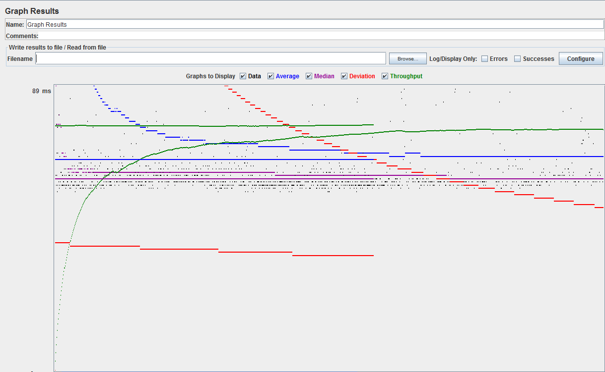
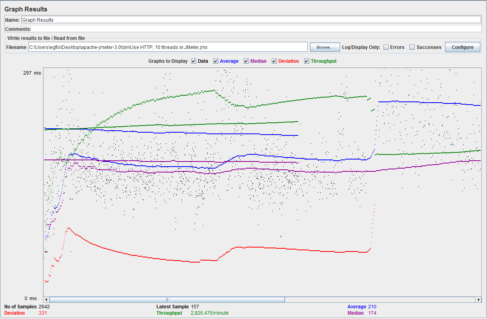
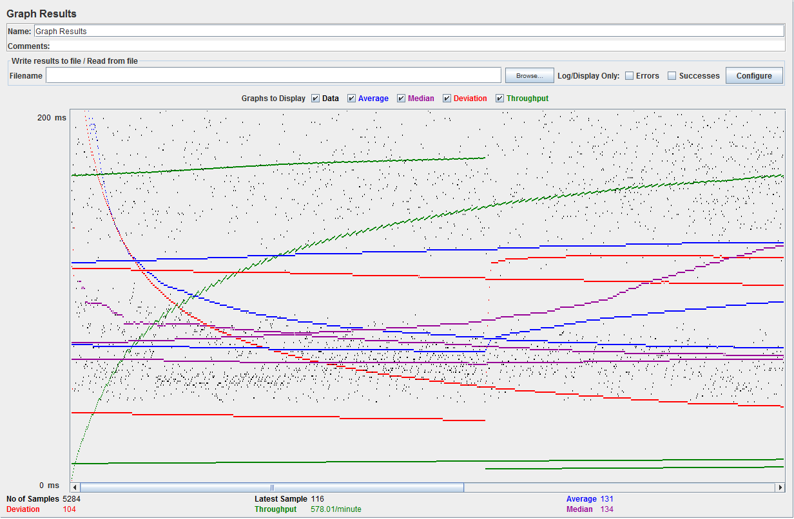
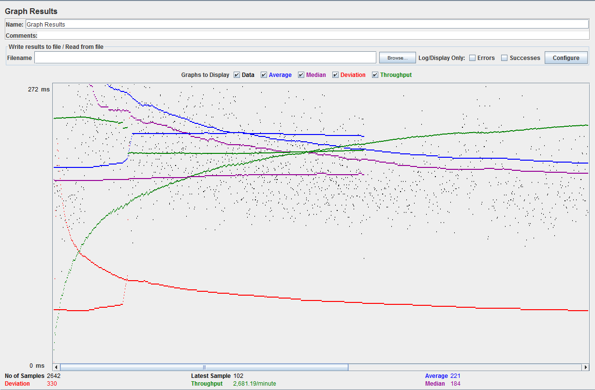
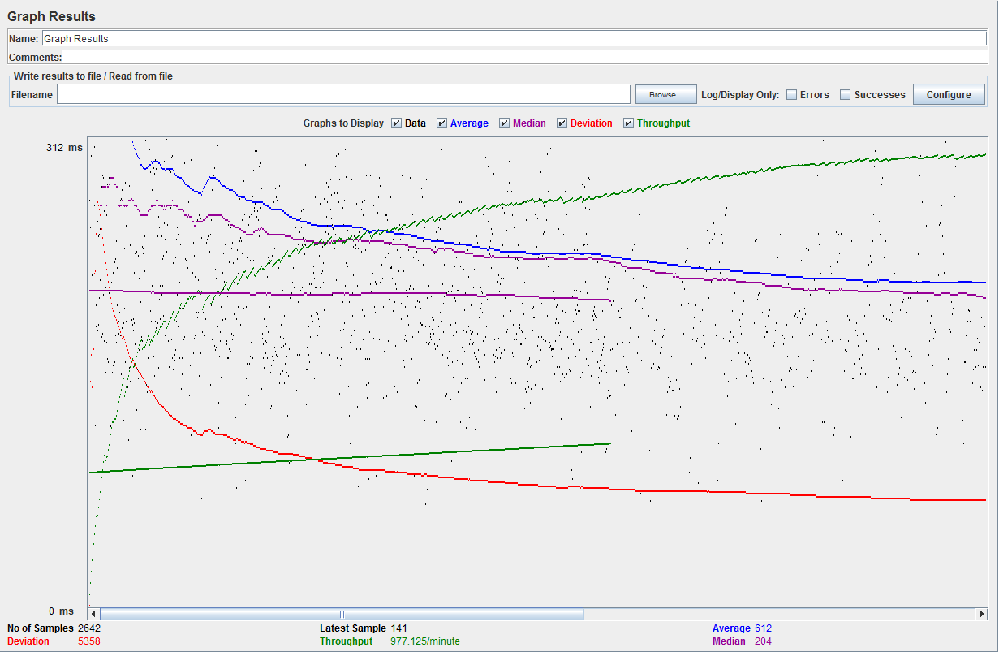
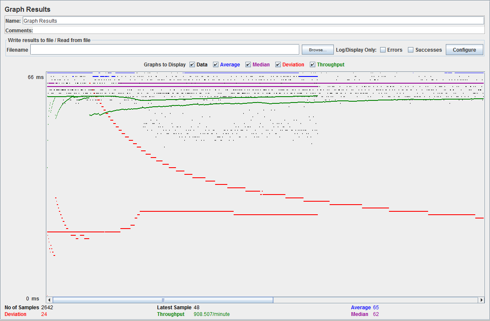
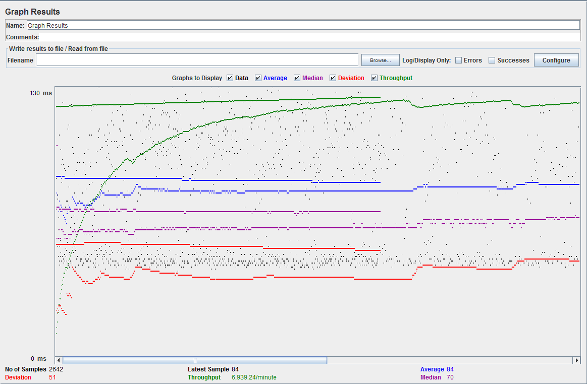
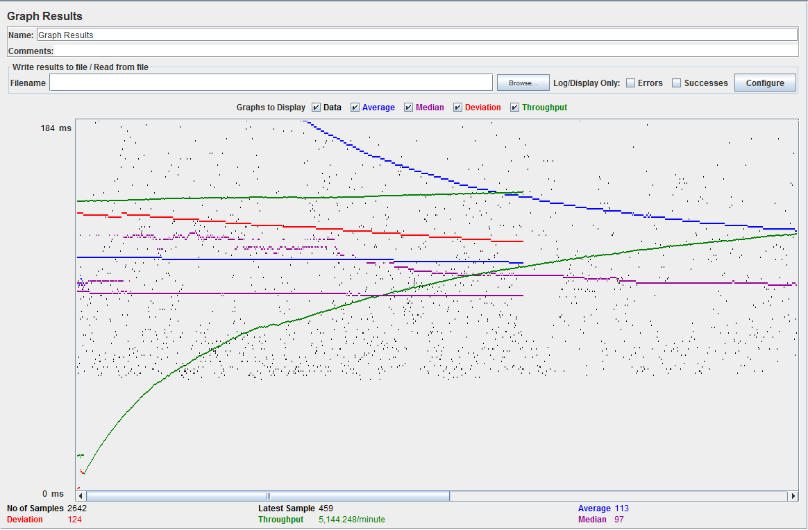
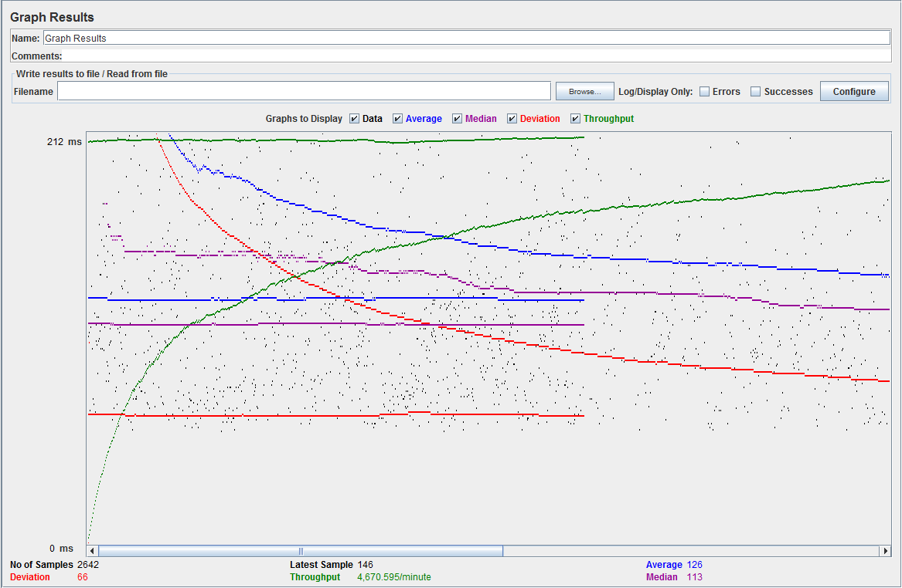

| Single-instance version cases | Graph Results Screenshot | Average Query Time(ms) | Average Search Servlet Time(ms) | Average JDBC Time(ms) | Analysis |
| Case 1: HTTP/1 thread |  | 66 | 17.59 | 16.34 | Since it is only 1 thread performing queries. The SearchServlet handles it feel with little slow down. |
| Case 2: HTTP/10 threads |  | 210 | 132.28 | 119.74 | As the number of users/threads increase there there more delays in getting query results. Compared to single thread. |
| Case 3: HTTPS/10 threads |  | 131 | 145.68 | 127.62 | With HTTPS there are some changes but not noticeable compared to using HTTP. |
| Case 4: HTTP/10 threads/No prepared statements |  | 221 | 149.765247871 | 133.84 | You can notice some diffrences between using prepared statements and not. Not using takes a little performance hit. |
| Case 5: HTTP/10 threads/No connection pooling |  | 612 | 303.48 | 215.64 | There is a large change compared to connection pooling. The average query time is doubled due the large performance hit of making new connections |
| Scaled version cases | Graph Results Screenshot | Average Query Time(ms) | Average Search Servlet Time(ms) | Average JDBC Time(ms) | Analysis |
| Case 1: HTTP/1 thread |  | 65 | 25.54 | 17.83 | With scaled using 1 thread there little difference compared to the single instance one. |
| Case 2: HTTP/10 threads |  | 84 | 89.57 | 37.63 | There is large difference compared to using single-instance. With Scaling, fabflix can handle multiple threads performing large queries |
| Case 3: HTTP/10 threads/No prepared statements |  | 113 | 63.23 | 56.24 | There is a small performance hit not using prepared statment as seen with the higher avg. Query Time. |
| Case 4: HTTP/10 threads/No connection pooling |  | 126 | 72.72 | 59.44 | Not as large difference compared to the single-instance but somewhat noticeable with increase avg. times |